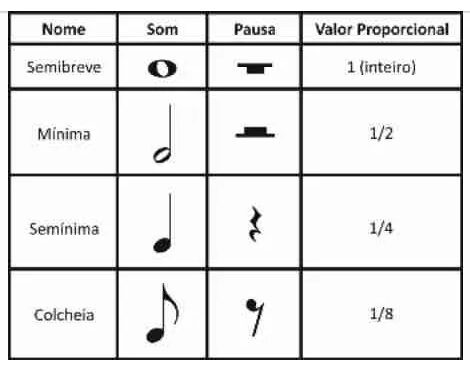

Como ler partituras?
Ler partituras é uma habilidade essencial para qualquer músico, permitindo que você interprete e execute músicas escritas. A partitura é uma representação visual da música, e entender seus elementos é fundamental. Vamos aprender os componentes básicos da notação musical.
A pauta
A pauta é o conjunto de cinco linhas e quatro espaços onde as notas são colocadas. Cada linha e espaço representa uma nota musical específica. A posição da nota na pauta indica sua altura.
Linhas da pauta: De baixo para cima, as linhas representam as notas E (Mi), G (Sol), B (Si), D (Ré) e F (Fá).
Espaços (entre as linhas) da pauta: Os espaços entre as linhas representam as notas F (Fá), A (Lá), C (Dó) e
E (Mi).
 |
|---|
Claves
As claves são símbolos que aparecem no início da pauta e determinam qual nota corresponde a cada linha e
espaço. As duas claves mais comuns são:
Clava de Sol: Indica que a segunda linha da pauta é um Sol. É frequentemente usada para instrumentos como
violino e flauta.
Clava de Fá: Indica que a quarta linha da pauta é um Fá. É utilizada para instrumentos como trombone e
baixo.
Fórmula de compasso
As Fórmula de compasso indicam como o ritmo da música é organizado. Elas são representadas no início da
partitura, logo após a clave. A assinatura de tempo consiste em dois números empilhados:
Número Superior: Indica quantas batidas há em cada medida.
Número Inferior: Indica o valor da nota que recebe uma batida (por exemplo, 4 significa que a semínima
recebe uma batida).
As Fórmula de compasso mais comuns incluem:
4/4: Quatro batidas por medida, com a semínima recebendo uma batida. É a assinatura de tempo mais utilizada
na música ocidental.
3/4: Três batidas por medida, com a semínima recebendo uma batida. Comum em valsas.
6/8: Seis batidas por medida, com a colcheia recebendo uma batida. Muitas vezes usada em músicas mais
rítmicas.
Entender a assinatura de tempo é fundamental para tocar no ritmo correto e manter a coerência musical.
Notas e Pausas
As notas representam sons, enquanto as pausas representam silêncios. Cada nota tem um formato específico que
indica sua duração relativa em relação a outras notas:
Semibreve: Esta nota é a referência básica, e outras notas são definidas em relação a ela.
Mínima: Dura metade da duração da nota semibreve. Portanto, se a nota semibreve tem uma duração total, a
nota mínima durará a metade dessa duração.
Semínima: Dura metade da duração da nota mínima. Assim, você pode imaginar que duas semínimas equivalem a
uma mínima.
Colcheia: Dura metade da duração da nota semínima. Portanto, quatro colcheias equivalem a uma mínima.
As pausas também têm formas que indicam silêncios de diferentes durações:
Pausa Semibreve: Representa um silêncio equivalente à duração de uma nota semibreve.
Pausa Mínima: Silêncio de metade da duração da nota semibreve.
Pausa Semínima: Silêncio de metade da duração da nota mínima.
Pausa Colcheia: Silêncio de metade da duração da nota semínima.
Reconhecer e entender essas durações relativas ajudará você a manter o ritmo correto enquanto toca.
|  |
|---|
Dinâmicas e Outros Símbolos
As dinâmicas indicam o volume da música e são representadas por letras e símbolos, como:
p (piano): Tocar suavemente.
f (forte): Tocar com força.
mf (mezzo-forte): Tocar moderadamente forte.
crescendo: Aumentar gradualmente o volume.
Além disso, existem outros símbolos que podem aparecer na partitura, como marcas de articulação (legato, staccato) e indicações de repetição (simbolizando partes que devem ser tocadas novamente).
 |
|---|
Praticando a Leitura
Para praticar a leitura de partituras, comece com músicas simples. Identifique as notas na pauta e tente tocá-las no seu instrumento. A prática regular ajudará a melhorar sua fluência na leitura de partituras. Lembre-se, ler música é uma habilidade que se desenvolve com o tempo e a prática, então não desanime se não conseguir imediatamente. Continue praticando e você verá progresso!